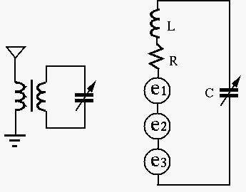

Next: Real and Reactive Power Up: Frequency Response Functions and Previous: Second-order system as a
Broadcasting and Frequency Allocation
The Federal Communications Commission (FCC) has very specific frequency allocation regulations, see the FCC frequency allocation chart.
Example 1:
Resonant circuit is widely used in radio and TV receivers to select a
desired station from many stations available. The tuning circuit shown
in the figure below is a series RCL circuit composed of an inductor
 , a resistor
, a resistor  (of the inductor) and variable capacitor
(of the inductor) and variable capacitor  , which
is adjustable to match the resonant frequency of the circuit to the
frequency of the desired radio station. The voltage across is to
be amplified by the subsequent circuits.
, which
is adjustable to match the resonant frequency of the circuit to the
frequency of the desired radio station. The voltage across is to
be amplified by the subsequent circuits.
If , , find the value of for this circuit to
resonate at
, also find the bandwidth.

Solution:
| (351) |
| (352) |
 |
(353) |
| (354) |
Example 2:
Assume
, and the frequency of the desired
station is 640 kHz, find the value of and the bandwidth of the tuning
circuit. Moreover, if the induced voltage in the circuit is
(rms), find the current (rms) in the resonant circuit, and the output
voltage (rms) across the capacitor.
Solution: At the desired resonant frequency , the reactance of the inductor is
| (355) |
 of this circuit is
of this circuit is
 |
(356) |
| (357) |
| (358) |
| (359) |
| (360) |
is
| (361) |
is
| (362) |
(same as the voltage source).
Example
In reality, all inductors have a non-zero resistance, therefore a parallel resonance circuit should be modeled as shown in the figure.

The admittance is:
 |
|||
|
(363) |
 appears in the real part
as well
as in the imaginary part
, the frequency that minimizes
has to be found by solving
appears in the real part
as well
as in the imaginary part
, the frequency that minimizes
has to be found by solving
| (364) |
 can still be found approximately by the previous
approach by letting
:
can still be found approximately by the previous
approach by letting
:
| (365) |
to be real, we must have
| i,e, | (366) |
| (367) |
Note: For the same reason, when considering the transfer function
of a series RCL circuit when the output is the voltage across either
or , the peak frequency is not exactly the same as the
resonant frequency , which only minimizes the denominator, but
the numerator is still a function of . Only when the output is
the voltage across (i.e., the numerator is , a constant, not a
function of ), will the resonant frequency be the same
as the peak frequency.
Amplitude, Phase, and Frequency Modulations
In radio or TV broadcast, the audio or video signal to be transmitted
is used to modulate the amplitude, phase, or frequency of the carrier signal
with carrier frequency
, which
is much higher than the highest frequency component of the signal . The
modulated signal  is then transmitted.
is then transmitted.
The amplitude of the carrier is modulated by the signal and becomes time variant:
| (368) |
| (369) |
 is required.
is required.
The phase of the carrier is modulated by the signal and becomes time variant:
| (370) |
| (371) |
The frequency of the carrier is modulated by the signal and becomes time variant:
| (372) |
| (373) |
 |
(374) |
| (375) |
The amplitude-modulated signal can be demodulated to recovered the signal from the transmitted signal by RF amplification, rectification, low-pass filtering, and audio signal amplification.
In any of the three case above, it requires a certain bandwidth around the
carrier frequency to transmit the modulated signal. Consequently,
the value of the tuner of the receiver needs to be very carefully chosen.
It needs to be high enough for good selectivity between different radio
stations, but, on the other hand, it cannot be too high in order to have a
bandwidth wide enough to contain all frequency components in the signal.
In digital broadcasting, the information to be broadcast is first converted into digital signal, which is then used to modulate the phase, amplitude or frequency of the carrier signal at certain radio frequency: